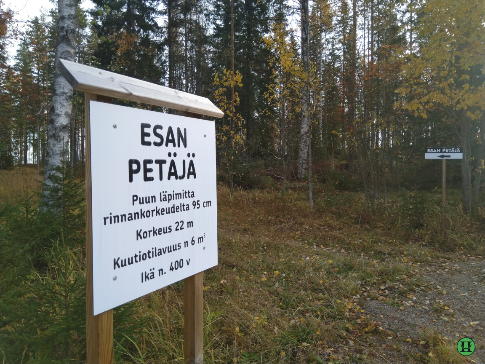

Luontopolun pituus on 0,5 km.
Polku alkaa Muuraismäentien varresta, jossa on pieni levike ja kyltti.
Höytiän kylä on vajaan viiden km:n päässä. Kyynämöisille päin ajettaessa päästään uimarannalle, joka on noin 2 km:n päässä.

Takaisin Esapetäjän luontopolkuun tässä.
Takaisin kartalle tässä.
Uuraisten sivut on tässä.